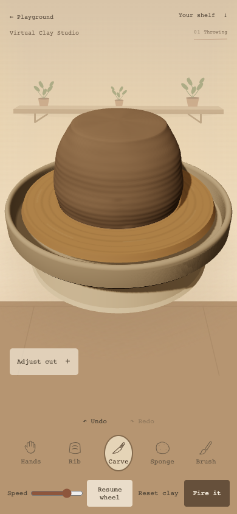
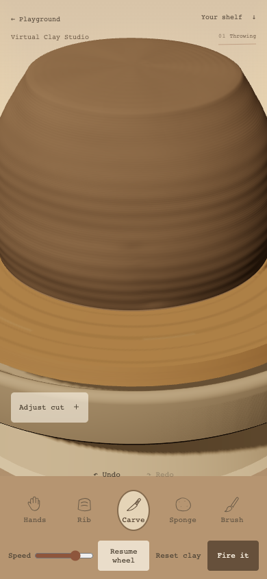
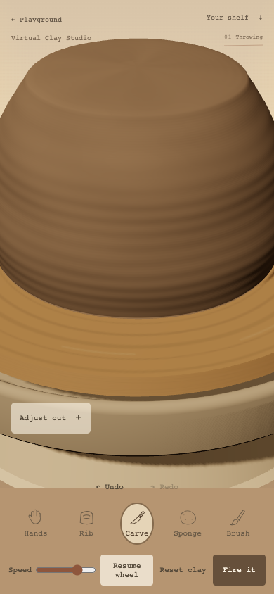
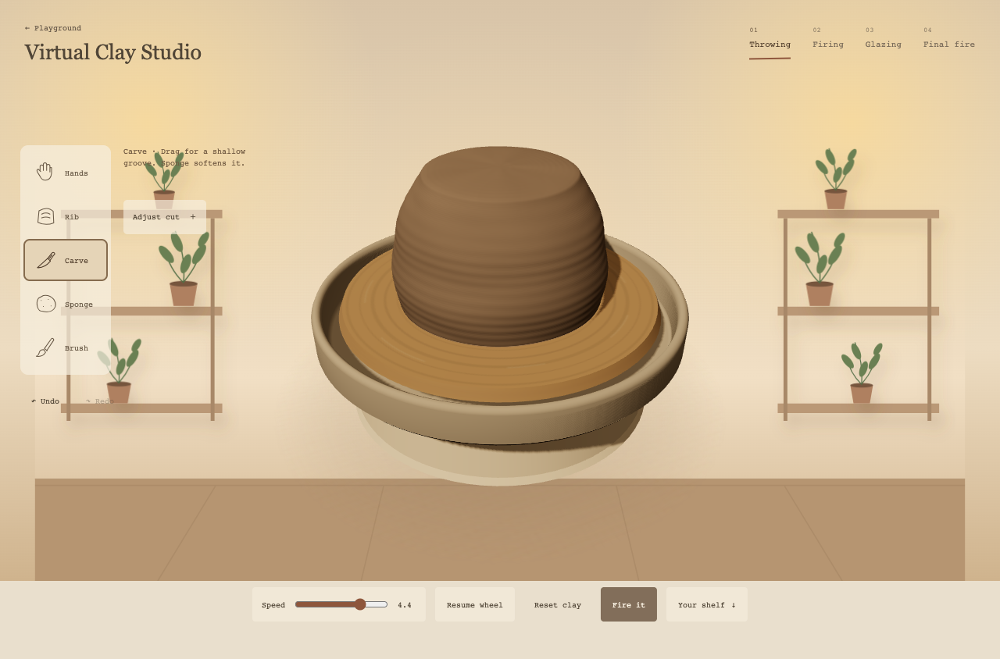
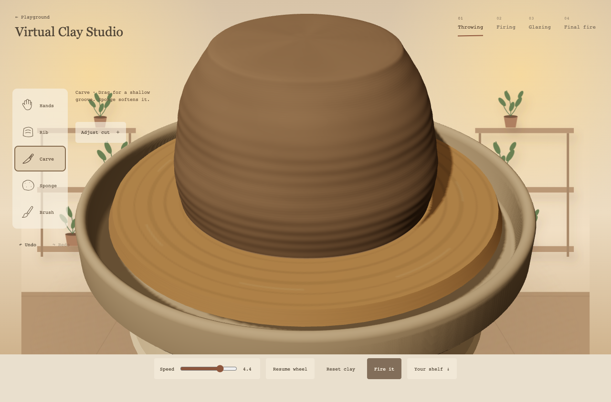
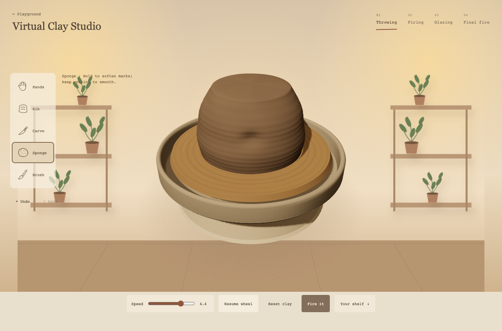
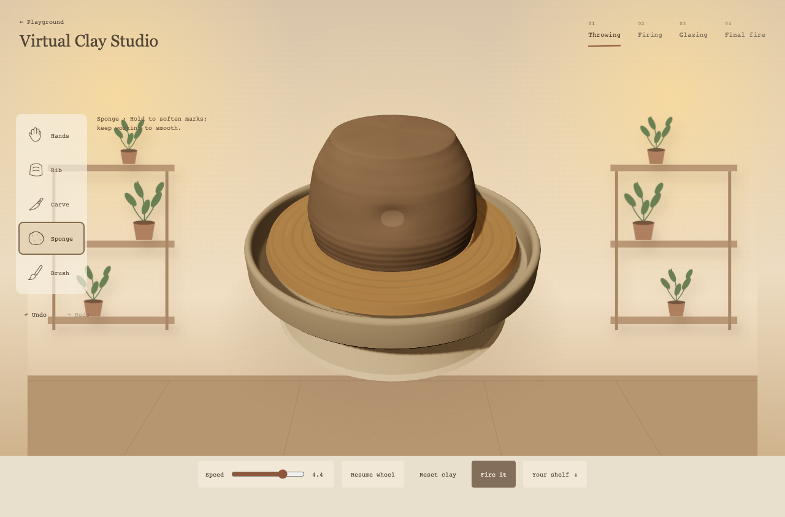

Sponge softens shallow marks but retains deep carving. Rib keeps its stronger compression role. Needle is available inside Carve for shallow, narrow incisions. No drying gate or new main tool.
Raw grain contrast fades with actual wheel speed and returns as it slows. This is a restrained perceptual cue, not physical motion blur. It never changes geometry or fired glaze. Fast screenshots capture a rotating piece, so angle differs from stopped captures.
Browser390/1280px: Needle Undo/Redo and unchanged shape/history under speed changes passed; no page errors. Recorded frame intervals around33.3ms in this run. No physical phone performance claim. Existing tool browser regressions and eight Node suites passed.






